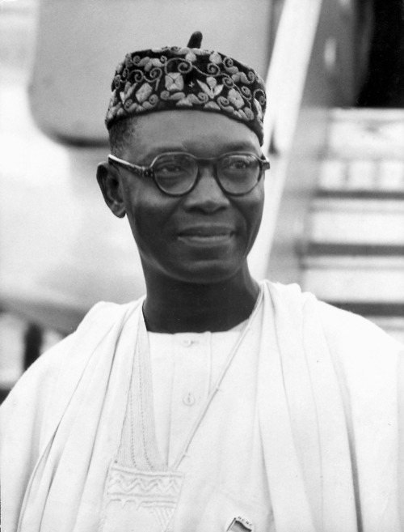

Dr. Nnamdi Azikwe
First ever President of Nigeria

This is a time line of Dr. Azikiwe's life: Noting the significant occurrences
of his Life.
- 1904 - Born in Zungeru, Northern Nigeria.
- 1934 - Took editorial position for the "African Morning Post"
- 1937 - Founded the "West African Pilot" to foster Nigerian Journalism.
Also became an active member of the "Nigerian Youth Movement"
- 1944 - Co-Foumded the "National Council of Nigeria and the Cameroons"
alongside Herbert Macaulay.
- 1946-60 - Vice President of the Nigerian National democratic Party.
- 1960 - Queen Elizabeth II appointed him to the "Privy Council of the United
Kingdom".
- 1960-63 - Governor-General and Commander-in-Chief of Nigeria.
- 1963-66 - President of the Federal Republic of Nigeria
- 1980 -He was conferred with the highest national honour of Grand Commander
of the Federal Republic (GCFR) by the Federal Republic of Nigeria.
- 1996 - dies at the age of 91.
Other Facts:- He won fourteen (14) honorary degrees from Nigerian, American
and Liberian universities including Lincoln University, Storer College,
Howard University, Michigan State University, University of Nigeria,
University of Lagos, Ahmadu Bello University, University of Ibadan,
Nnamdi Azikiwe University, and University of Liberia.
"Originality is the essence of true scholarship.
Creativity is the soul of the true scholar. "
Late Dr. Nnamdi Azikiwe
Want to know more about Dr. N. Azikiwe? Click Here